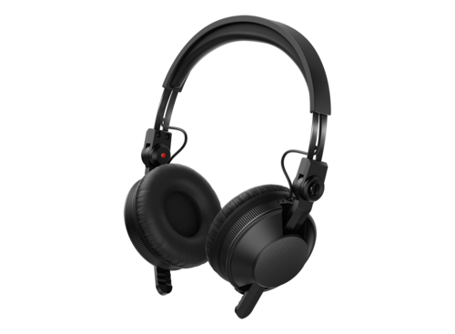
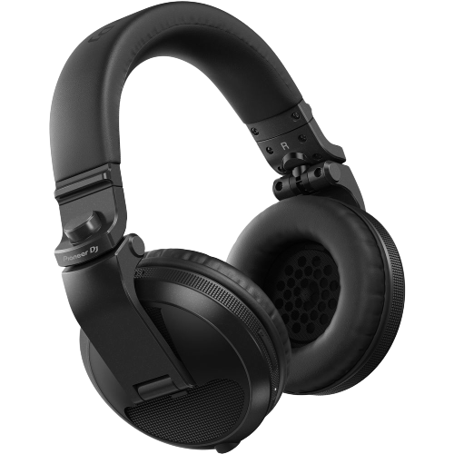

AURICULARES

HDJ-CX
- Diseño minimalista, el concepto diferente de la serie HDJ-X, diseñados ergonómicamente para minimizar cualquier tensión en la cabeza, el cuello o los hombros.
- El nuevo diafragma PEEK-PU-PEEK proporciona una respuesta de frecuencia de 5 Hz a 30 kHz permite escuchar claramente para un monitoreo y mezcla precisos en cualquier entorno.
- Componentes son extrarresistentes.
- Cables:Cable en espiral y Cable recto.
- Rango de frecuencia: 5 - 30000 Hz.
- Peso (sin cable):136 g.
- Sensitivity:103 dB.
HDJ-S7-k
- Más flexibles, con auriculares más pequeños sobre la oreja, una diadema ajustable y giratoria que puedes fijar a 45 grados, lo que te permite usarlos cómodamente, de la forma que prefieras.
- Estuche de transporte.
- Rango de frecuencia:5 - 40000 Hz.
- Cables:Cable en espiral y Cable recto.
- Peso:215 g.

HDJ-X5BT
- Tecnología inalámbrica Bluetooth, podrás preparar tus pistas con facilidad, en cualquier lugar y a cualquier hora, sin ningún obstáculo.
- Bajos profundos y abundantes, sin importar si te encuentras en la calle o en la cabina.
- Cuatro colores disponibles: negro metálico, rojo metálico, dorado o blanco brilloso.
- Cable incluido.
- Rango de frecuencia:5 - 30000 Hz.